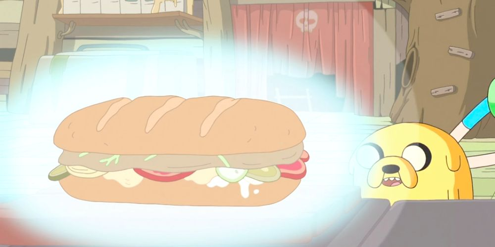

Jake's Perfect burger

Description
Scholars have attempted to crack the code to the perfect sandwich for millennia - in the end, it was Jake the Dog who finally achieved the zenith of 'wichcraft. Can Jake's glowing dream sandwich be realized outside the cartoon realm, or will it topple under the weight of its 12 separate components?
Ingredients
- 1 boneless ribeye, the size of your bread
- 2 sprigs thyme
- 2 sprigs rosemary
- Salt & freshly ground pepper
- 1 lobster tail
- 1 cup vegetable oil
- Juice of 1 lemon
- 3 egg yolks
- 1/2 pound bacon
- 1 Cornish game hen, deboned
- 3 thinly sliced rounds of vidalia onion, plus more for tear-gathering
- 1 large, long sourdough loaf
- 3 Tbsp cream cheese
- 3 Tbsp fresh dill, picked
- 1 dill pickle, sliced thinly
- 1 egg, hard boiled, peeled, and sliced
- 10 thin slices of cucumber
- 8 thin slices of roma tomato
- 2 tsp tears
Steps
- Vacuum seal ribeye with thyme, rosemary, salt, and pepper, and place in a sous vide bath set at 135°F for 2 hours.
- Preheat oven to 350°F. Steam lobster tail for for 8 minutes, remove meat and reserve for other applications. Break up the shell into pieces and place in a high-powered blender along with vegetable oil, and blend for 30-60 seconds, or until lobster is finely ground. Simmer mixture for 15 minutes, and strain through a fine mesh sieve. Set aside to cool completely.
- In an immersion blender cup, combine lemon and egg yolks. Blend briefly to combine, and with immersion blender running, slowly pour lobster oil down the side of the cup, until a thick aioli forms. Refrigerate until ready to use.
- Cook bacon as desired, reserve fat. Brush Cornish game hen with fat, and fry skin-side-down in a hot cast iron skillet, flipping once golden. After flipping, place in the oven and cook until meat registers 165°F, about 10 minutes.
- Assemble the sandwich - halve the loaf, and torch both sides of the interior with a culinary torch (only for accuracy - recommend toasting bread in the oven or throwing under the broiler). Spread with cream cheese, and shingle sliced pickles on one side of the sandwich, while sprinkling dill on the other side of the sandwich. On the pickle side of the sandwich, shingle the hard boiled egg slices, followed by the Cornish game hen, followed by cucumber, then sweet yellow onion, roma tomatoes, steak, tears, and bacon. Coat the other side of the bread with lobster aioli, top the sandwich, slice, and serve.
Main Page